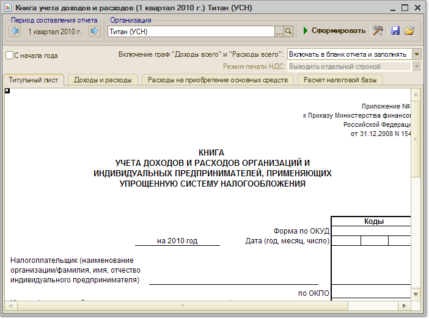

Меню Отчеты > УСН > Книга учета доходов и расходов
Отчет предназначен для формирования Книги учета доходов и расходов для предприятий на упрощенной системе налогообложения.

Параметры формирования
По кнопке "Печать" на панели инструментов отчет можно вывести на печать.
При применении упрощенной системы налогообложения записи в книгу учета доходов и расходов делают следующие документы:
|
Вид расхода |
Требования (признание расходов производится в наиболее поздний из моментов) |
|
Услуги |
Отражена услуга сторонней организации Оплачено поставщику |
|
Расчеты с сотрудниками |
Начислена заработная плата Выплачена заработная плата |
|
Расчеты по налогам и взносам |
Начислены налоги (взносы) Налоги (взносы) перечислены |
|
Материалы |
Материалы поступили от поставщика Материалы оплачены поставщику |
|
Товары |
Товары поступили от поставщика Товары оплачены поставщику Товары реализованы покупателю Товары оплачены покупателем |
|
Дополнительные расходы (по материалам) |
Увеличивают стоимость материалов и включаются в расходы в их составе |
|
Расходы будущих периодов |
Отражены расходы будущих периодов Оплачено поставщику Списана часть расходов (к расходам может быть принята только списанная часть) |
|
НМА |
Поступил НМА Оплачено поставщику |
|
Основные средства |
Поступление ОС Ввод в эксплуатацию ОС Оплачено поставщику |
|
Выделение выручки комитента из состава доходов |
При поступлении оплаты от покупателя анализируется оплачиваемый документ и если в нем находятся комиссионные товары, сумма принимаемых доходов уменьшается на их продажную стоимость. Информация о выручке за комиссионные товары добавляется в поле «Содержание» записи регистра КУДиР |
Информация для Книги учета доходов и расходов накапливается в специальном оборотном регистре, который заполняется первичными документами по данным налогового учета.